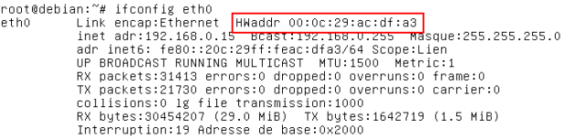

Activité : détermination de l'adresse MAC de votre ordinateur
Vous devez déterminer l'adresse MAC de votre ordinateur et le constructeur de la carte réseau.
La méthode utilisée est valable sous Windows.
Dans un premier temps, déterminez l'adresse MAC ou adresse physique grâce à la commande ipconfig /all comme ci-dessous :
Ensuite, consultez le site "http://www.coffer.com/mac_find/" pour obtenir le nom du constructeur à partir de l'adresse MAC.
Déterminez le nom du constructeur de la carte réseau de votre ordinateur.
Remarque : sous Linux, il faut utiliser la commande ifconfig :
